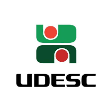

Nossa tragetória

Somos uma startup inovadora focada em tecnologia para saúde, especializada no desenvolvimento de soluções inteligentes para o monitoramento glicêmico não invasivo. Nosso projeto utiliza inteligência artificial avançada para analisar dados do sensor E-Gluco, da UDESC, oferecendo previsões e correções precisas dos níveis de glicose. Nosso objetivo é facilitar a vida de pessoas com diabetes, proporcionando um acompanhamento mais eficiente e confortável, por meio de software de alta performance e modelos preditivos inteligentes.
Temos uma parceria estratégica com a Universidade do Estado de Santa Catarina (UDESC), por meio do Laboratório de Eletrônica Orgânica (LEO), responsável pelo desenvolvimento do sensor E-Gluco — um dispositivo inovador de monitoramento glicêmico não invasivo. Essa colaboração garante acesso à tecnologia de ponta para integração com o nosso software de inteligência artificial, fortalecendo a base científica e tecnológica da nossa solução.
A diabetes mellitus configura-se como uma condição crônica de alta prevalência global, afetando atualmente mais de 529 milhões de indivíduos em todo o mundo. De acordo com a publicação científica The Lancet, esse número pode ultrapassar 1,3 bilhão até o ano de 2050. No contexto brasileiro, os casos já superam a marca de 20 milhões, posicionando o país entre os seis com maior incidência mundial. O monitoramento glicêmico, etapa essencial no manejo da doença, ainda é majoritariamente realizado por métodos invasivos, como a punção digital, que exige múltiplas perfurações diárias nos dedos dos pacientes. Tal procedimento gera não apenas desconforto físico, mas também impactos emocionais significativos. Crianças e indivíduos neurodivergentes com hipersensibilidade tátil, por exemplo, frequentemente demonstram quadros de ansiedade, medo e resistência diante da necessidade de monitoramento frequente. Embora dispositivos como o FreeStyle Libre representem avanços tecnológicos importantes, ainda dependem de sensores invasivos e envolvem custos elevados, restringindo seu acesso a uma grande parcela da população. Diante desse cenário, constata-se uma carência de soluções realmente não invasivas, acessíveis e com validação clínica robusta para o monitoramento contínuo da glicemia. Com o objetivo de suprir essa lacuna, propomos o desenvolvimento de uma solução baseada em Inteligência Artificial (IA), cuja principal função será corrigir os dados provenientes de sensores não invasivos e, a partir desses dados tratados, fornecer análises preditivas dos níveis glicêmicos dos usuários. Essa abordagem permitirá que empresas parceiras fabriquem sensores de menor custo, enquanto nossa tecnologia será responsável pelos processos de calibração, validação e interpretação dos sinais, assegurando a confiabilidade dos resultados.
Tem vontade de revolucionar o mundo do Diabetes? Entre em cotato já!
Email: projetopti2025@gmail.com
WhatsApp: (11) 96728-2124
Endereço: CASA DA MAE DO HENRIQUE